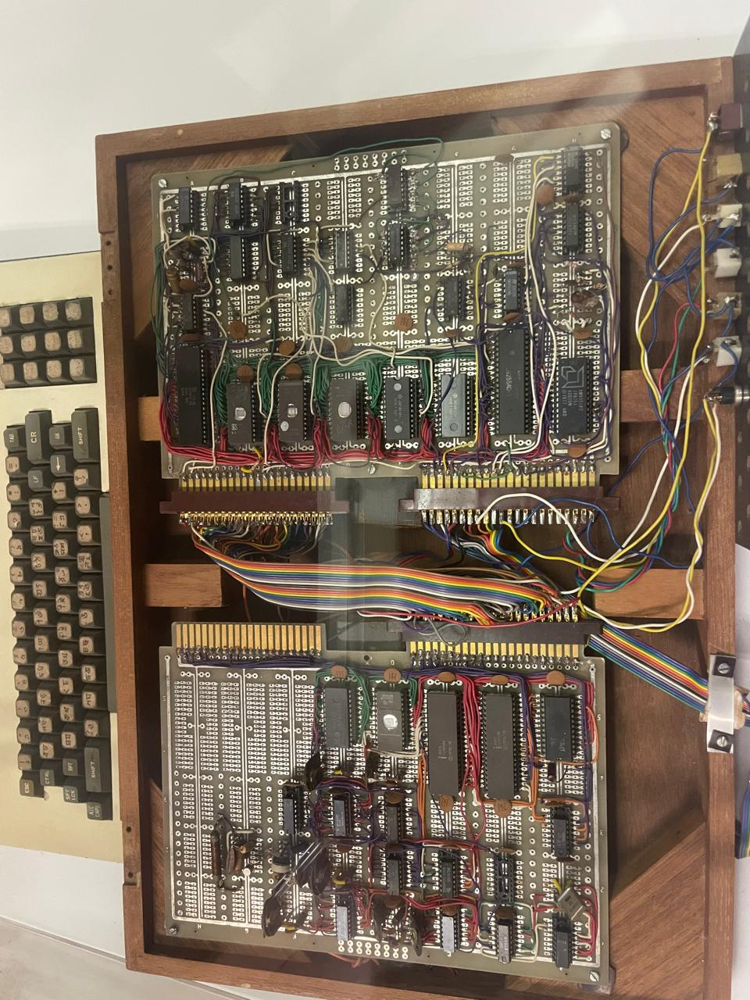
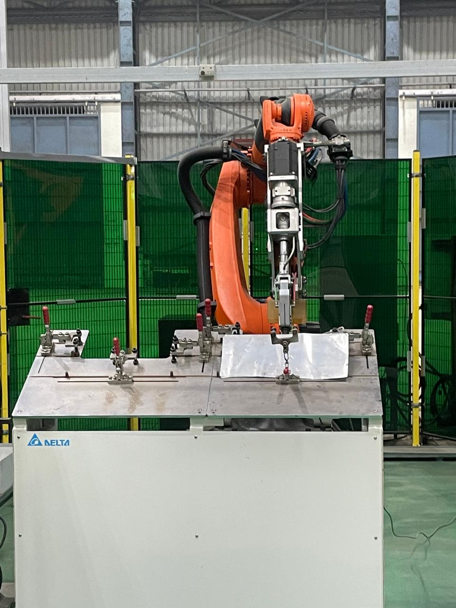

CNN Waste Segregation
Raspberry Pi 4 + CNN classifying biodegradable vs. non-biodegradable waste. 2nd place at IIT Kharagpur among 17k+ participants.
Most of my work outside the lab lives here: tutoring that scales, classrooms that practice, and tools for people the default design forgot. Three projects, one thread.
AI math tutor I built with Feynman-style explanations and adaptive learning. 9k+ views, 100 active users across 9 countries.
A nine-module CAS guide to experiential learning under NEP 2020 — deployed across 5+ schools and STEAM labs.
School-based NGO across Delhi. I built assistive devices for 50+ visually impaired students and led programs for 300+ across 10 schools. Patent pending on all three innovations.

Raspberry Pi 4 + CNN classifying biodegradable vs. non-biodegradable waste. 2nd place at IIT Kharagpur among 17k+ participants.

A gym concept converting kinetic energy into electricity, developed at the Hero MotoCorp Innovation Cell.
Bias analysis in the criminal justice system using NLP models — fairness metrics and algorithmic accountability.